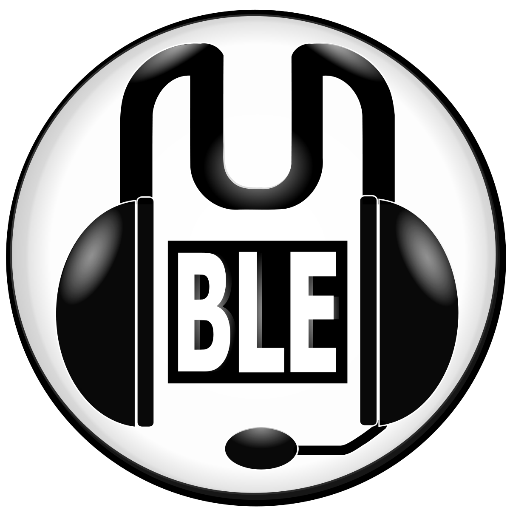

Episode 5 - Umweltschutz und Nachhaltigkeit
Episode 4 - Linux-Desktopumgebungen
Episode 3 - Das Linux Terminal
Episode 2 - Vorstellung des Projekts
Rede mit uns auf voice.mumbletreff.com:10012 via Mumble.
Episode 5 - Umweltschutz und Nachhaltigkeit
Episode 4 - Linux-Desktopumgebungen
Episode 3 - Das Linux Terminal
Episode 2 - Vorstellung des Projekts
Wir sind eine Community von Menschen, die gerne miteinander sprechen. Deshalb betreiben wir einen Sprachserver mit der Mumble-Software.
Wir reden gerne über verschiedene Themen, wie z. B.:
Es ist uns dabei sehr wichtig möglichst niemanden auszuschließen und einem breitem Spektrum an Meinungen einen Platz für den Austausch zu bieten.
Im Gegensatz zu anderen Mumble-Servern liegt unser Fokus nicht auf Computerspielen.
Wir haben auch eine lose Verbindung zum Chaos Computer Club (CCC). Wenn du etwas über den CCC erfahren möchtest oder schon selber im CCC-Umfeld tätig bist, dann bist du bei uns genau richtig.
In Zukunft planen wir Podcast-Beiträge in verschiedenen Formaten (Interview, Themen-Sendung, etc.) zu produzieren.
Server: voice.mumbletreff.com
Port: 10012Wir freuen uns über jeden Beitrag!
Wenn die Installation / Einrichtung von Mumble bei dir nicht klappt, kannst du uns auch auf unserem Telefon-Gateway anrufen: 06241 857 28 33